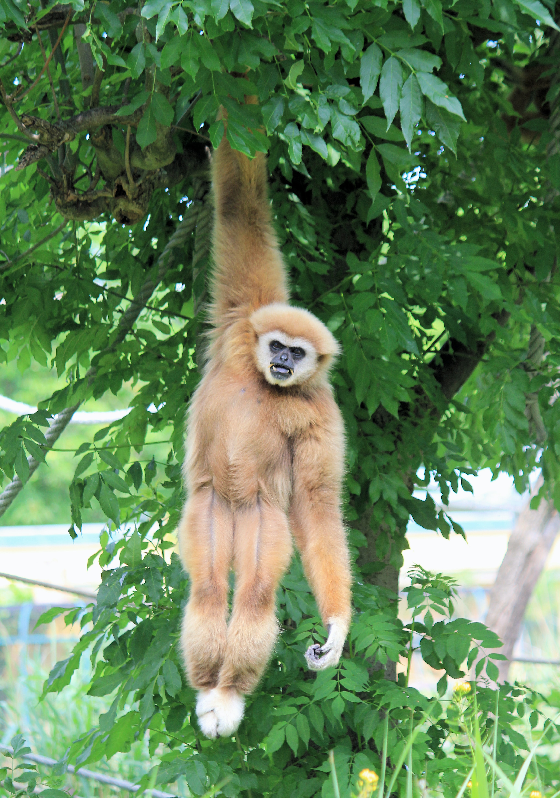
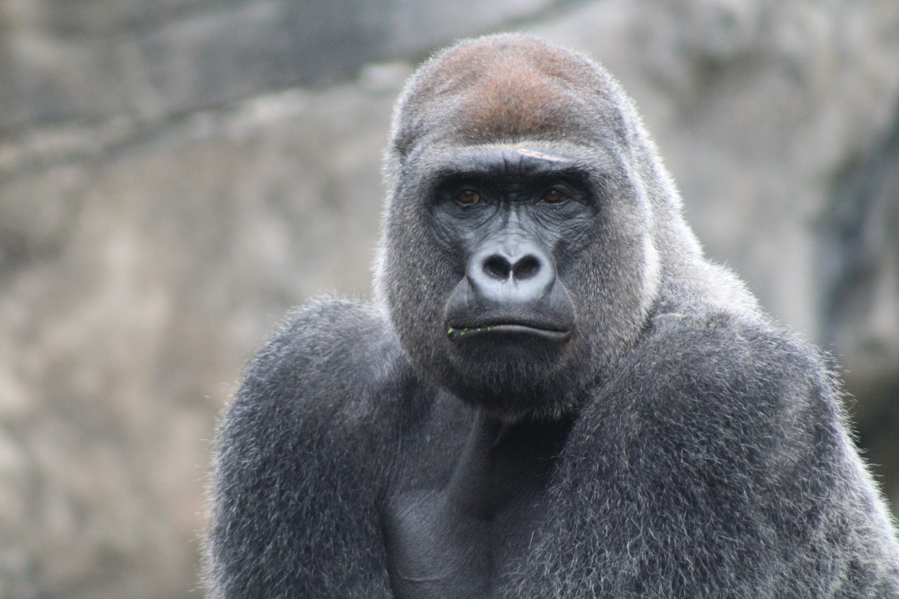
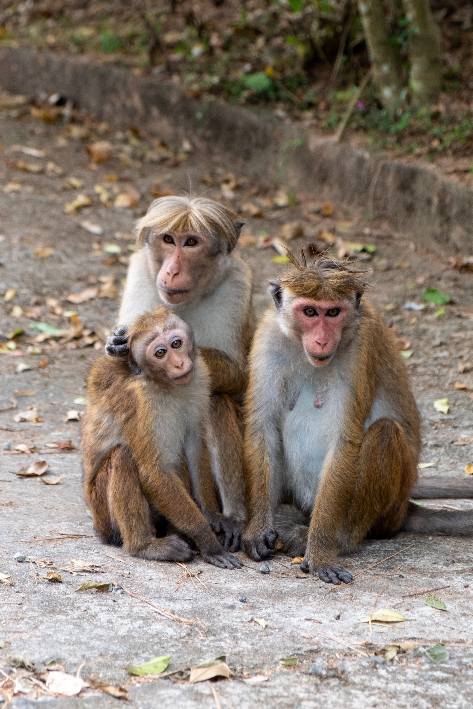

Nurgle the monkey pictured right before he attacked and killed 3 children. He was shot dead at Jacksonville Zoo.
Photo by Dušan veverkolog on Unsplash

John F. Kennedy the gorilla sadly passed away by a bullet wound after brutally killing two security guards.
Photo by Carlos Cram on Unsplash
Apis the mandrill, missing but persumed dead. He escaped his containment and stole a visitors car, he was last seen when he ran over a group of kindergarten kids and fled the scene.
Photo by Y S on Unsplash

Mary (left monkey), Josheph (right monkey) and Jesus (small monkey) pictured 2 days before they were found dead, ripped apart by another monkey. Main suspect is Tractor the gorilla.
Photo by Silver Ringvee on Unsplash